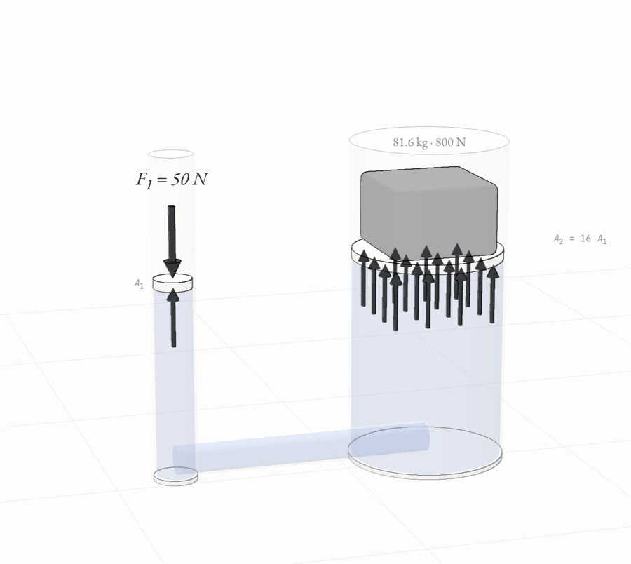
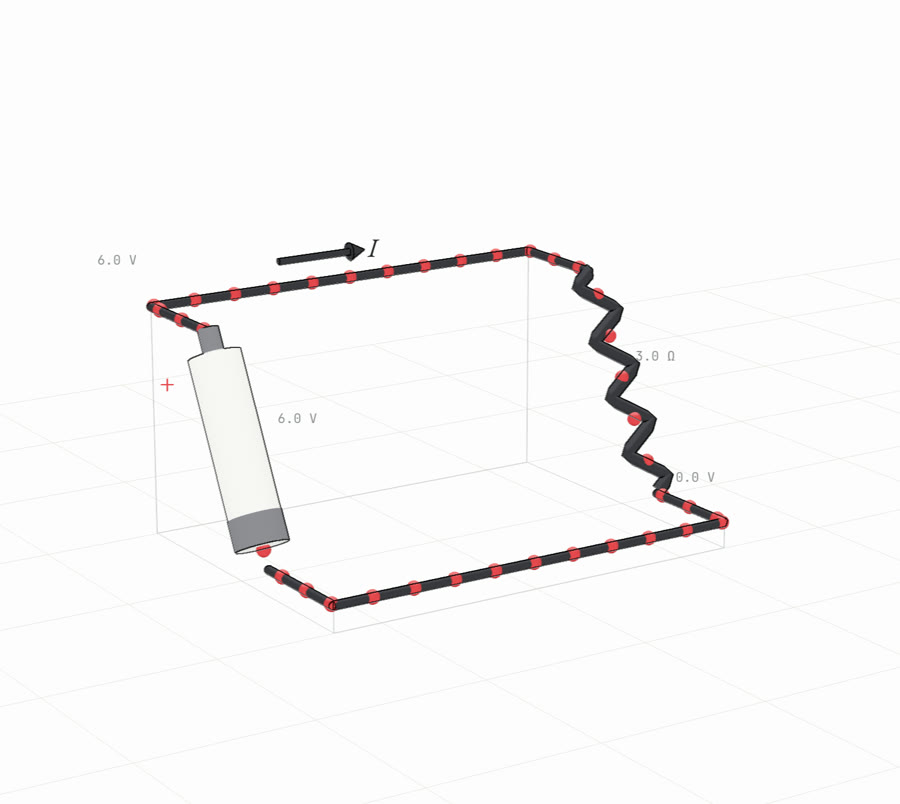

Fluids08
Fluids
Density, pressure, buoyancy, atmosphere Junior
Energy04
Work & energy
Work, KE, PE, conservation intro Junior
Circuits13
Circuits
Series/parallel, Ohm, power (trimmed) Junior
Optics16
Optics
Rays, reflection, mirrors, refraction, colour Junior
Optics 3DLab
Optics 3D lab (6 stations)
Local original · Three.js ray paths
Magnetism14
Magnetism (opt.)
Poles and field lines intro Junior